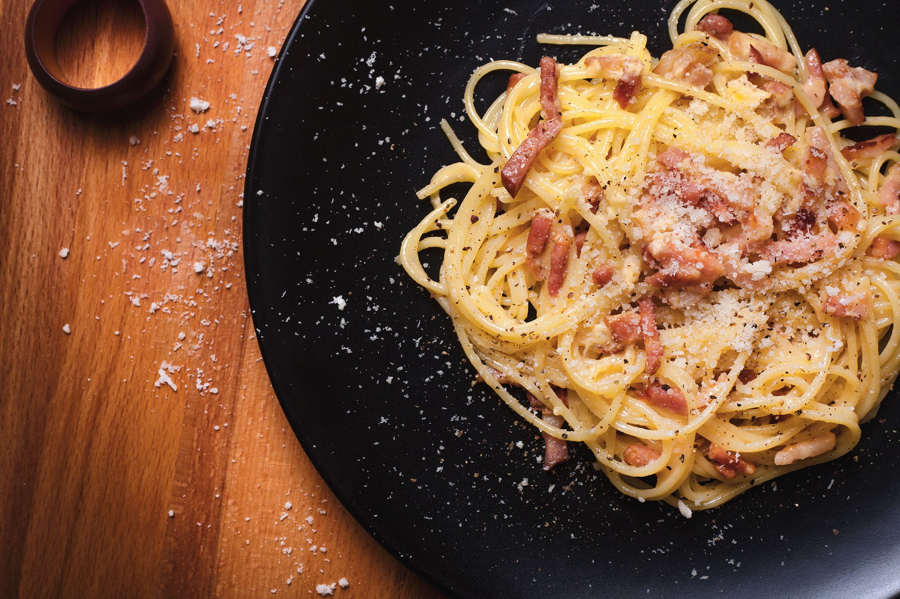

Carbonara

Carbonara is a pasta dish made with fatty cured pork, hard cheese, eggs, salt, and black pepper. It is typical of the Lazio region of Italy. The dish took its modern form and name in the middle of the 20th century.
The cheese is usually pecorino romano. Some variations use Parmesan, Grana Padano, or a combination of cheeses. Spaghetti is the most common pasta, but bucatini or rigatoni are also used. While guanciale, a cured pork jowl, is traditional, some variations use pancetta, and lardons of smoked bacon are a common substitute outside Italy.
Ingredients for 4 people:
- 400g spaghetti
- 100g guanciale
- 2 egg yolks
- 2 egg
- 25g grated parmigiano
- 25g grated pecorino
- olive oil
- salt
- black pepper
Recipe steps:
- Put the water for the pasta on the heat and in the meantime prepare the sauce.
- Sauté the guanciale in the pan with a drizzle of oil for a couple of minutes, then turn off the heat and set aside.
- In a large bowl, shell the whole egg and add the yolk, grated cheeses and plenty of pepper. We work all the ingredients with a whisk until we obtain a creamy and well blended mixture.
- Cook the spaghetti in salted water and drain them al dente directly into the bowl of eggs.
- Add the guanciale cubes and quickly mix the pasta.
- Here is our carbonara served on the table!
Home